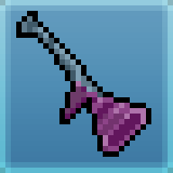

Olá ninjas!
Sou Auriosh.
Embora meu nome seja Igor, sou reconhecido em todo o Nin Online pelo meu codinome. Sou um veterano leal da Vila da Névoa, presente no servidor Hawk desde o seu nascimento.
Minha especialidade reside no caminho do Médico / Água. Sou um Shinobi de build híbrida, agora mestre na arte da Bolha, utilizando minhas habilidades para envenenar lentamente meus oponentes e controlar o campo de batalha com táticas de contenção.
Atualmente, exerço a função de moderador no Discord da Névoa. Como líder da Guilda Hoshigaki, dedico meus esforços para acolher, treinar e guiar os novatos que buscam trilhar o caminho ninja.
Afiliação
Mist Village
Maestria
Medicina & Água
Ficha Shinobi
Ninja
Auriosh
Poison Pipe
Status
Combat Vitals
Specifications

Weapon
Seathorn Pipe
Alpha Ring
Dragon Ring: +4 Fort, +3 Chk
Beta Ring
Dragon Ring: +4 Fort, +3 Chk
Horoscope Charm
Taurus - +5% Fort
Guild Buff
Hoshigaki: +10% Stats
Arsenal Shinobi
Forjando sistemas na névoa para a prosperidade do servidor Hawk.
Status do Arsenal: Expandindo
Trabalhando ativamente em novas integrações para a comunidade.
"Meu objetivo final é unificar estas ferramentas em um ecossistema único de utilidades. Os projetos marcados com 'Em Andamento' ainda estão sendo balanceados."
Guia de Maestrias
Um guia definitivo elaborado para auxiliar shinobis recém-chegados na sua jornada inicial. Oferece direcionamento estratégico sobre a alocação de atributos, dicas avançadas de execução de jutsus e uma rota de evolução otimizada do nível 1 ao 35.
Guia de Nivelamento
O diretório oficial de missões para os ninjas da Vila da Névoa. Contém o passo a passo detalhado para o avanço do nível 1 ao 60, incluindo dicas práticas de rotas de up e vídeos tutoriais elaborados por membros experientes da comunidade.
Calculadora de Guilda
Ferramenta analítica de alta precisão indispensável para a gestão de facções. Permite simular a curva de nivelamento, planejar a distribuição de atributos e organizar a estrutura administrativa de guildas para maximizar sua eficiência no servidor.
CardMaker Shinobi
Uma plataforma criativa desenvolvida para a comunidade expressar sua identidade ninja. Permite gerar cartas personalizadas com design exclusivo, onde os jogadores podem destacar seus melhores atributos, itens e a sua própria ficha técnica de personagem.
Criador de TierList
Sistema comunitário de ranqueamento focado na análise do 'meta' do jogo. Desenvolvido para que os jogadores possam criar e compartilhar Tier Lists de maestrias, armas, jutsus e até mesmo de outros shinobis. (Projeto em fase de estruturação).
Mapa Mundi Interativo
Um atlas interativo e abrangente do mundo de Nin Online. O projeto visa mapear todas as zonas geográficas, consolidando um banco de dados tático sobre a localização de inimigos, respawns de recursos e tabelas de drops detalhadas.
Nin Tournaments
Site que faz um acompanhamento detalhado de todos os eventos PvP e torneios do jogo. Atualmente o sistema de registros é atualizado manualmente, por isso pode haver pequenos atrasos nas tabelas mais recentes.